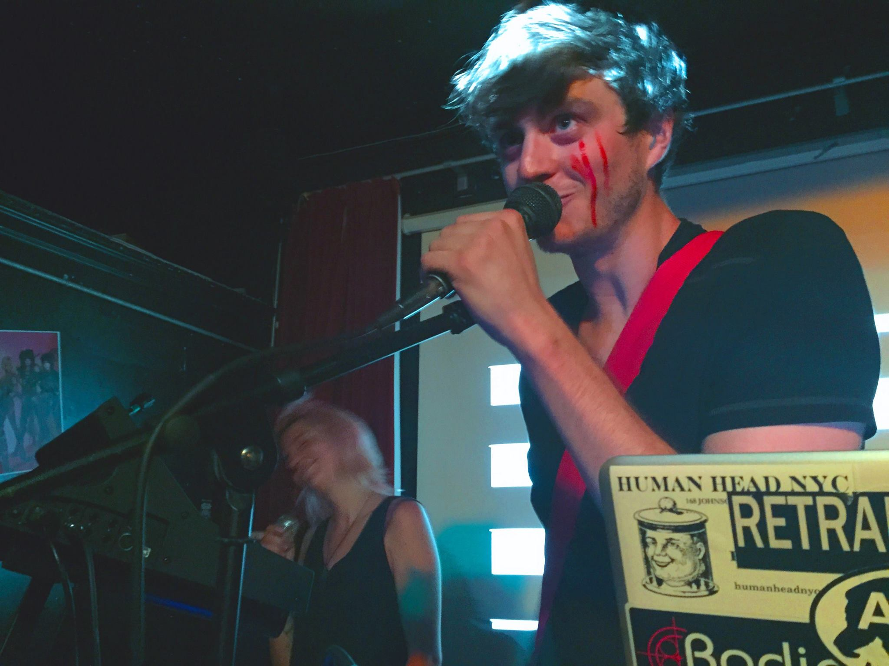
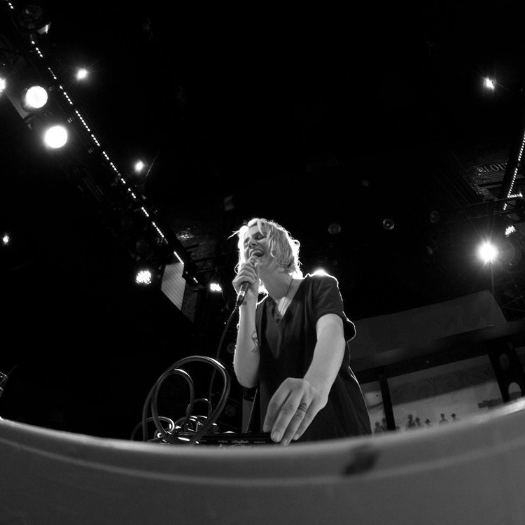
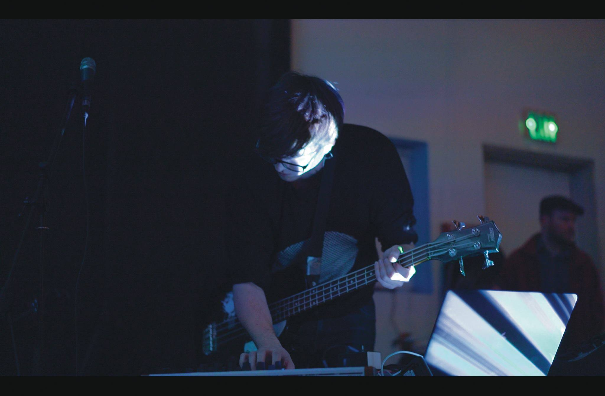
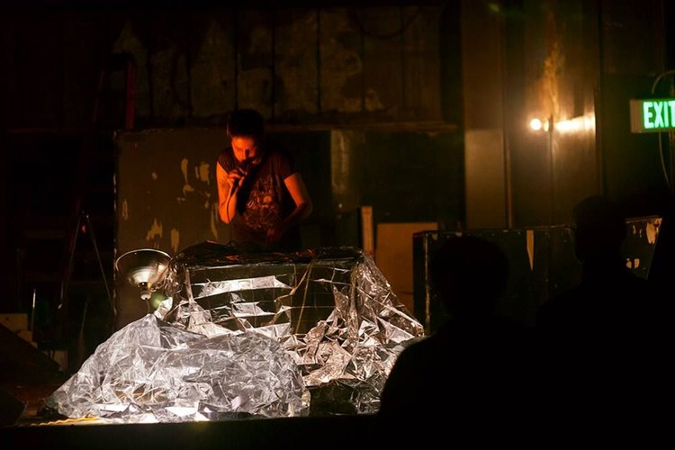
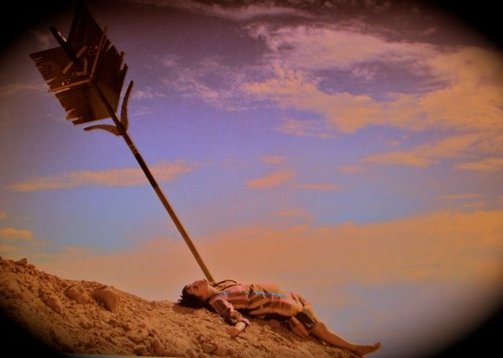
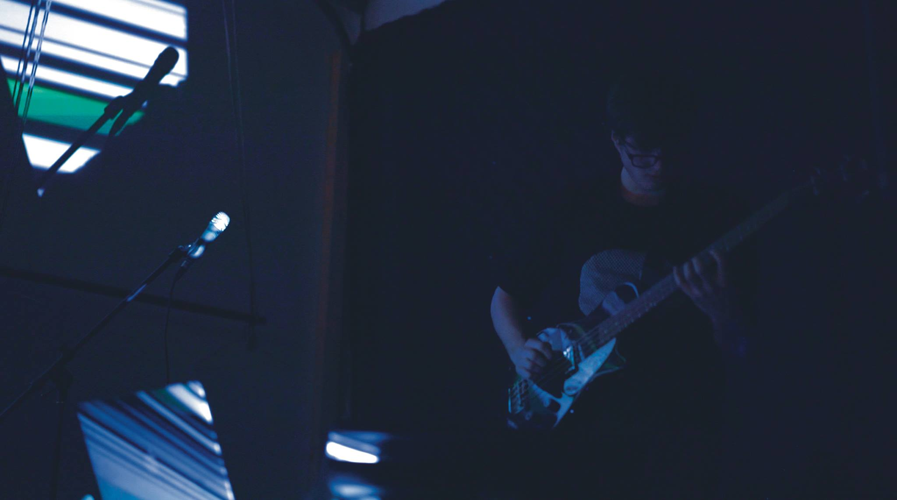
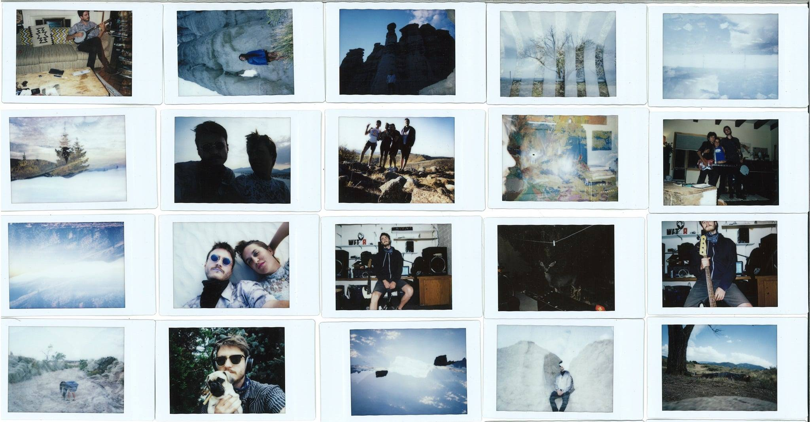

<!DOCTYPE html>
<html lang="en-US">

<head>
	<title>Avery</title>
	<meta name="viewport" content="width=device-width, initial-scale=1.0">
	<meta name="description" content="Avery's Portfolio">
	<link rel="shortcut icon" href="/AveryBickLogo.jpg" id="favicon">
	<link href="./css/style.css" rel="stylesheet" type="text/css"/>
	<link rel="stylesheet" href="https://fonts.googleapis.com/css?family=Didact+Gothic">
	<link rel="icon" href="./img/AveryBickLogo.jpg">

	<style type="text/css">
	a:link {color:#7dc9f4;}    /* normal link */
	a:visited {color:#7dc9f4;} /* visited link */
	a:hover {color:#50afe5;}   /* mouse over link */
	a:active {color:#fe0000}   /* selected link */
	</style>

	<style>
		#playlist{
			list-style: none;
		}
		#playlist li a{
			color:white;
			text-decoration: none;
		}
		#playlist .current-song a{
			color:blue;
		}
	</style>

</head>


</html>

<body>
	<div class="large-column" id="bio">	
		<h2 text-align: center;><i>Elation and Destruction</i></h2>
		<h3 text-align: center;>by PSIRENS & Slow Proteo</h3>
	<div align="center">
		<a href="#About">About</a>
		<a href="#Album">Album</a>
		<a href="#Film">Film</a>
		<a href="#Media">Media</a>
		<a href="#Press">Press</a>
		<a href="#Contact">Contact</a>
	</div>


	<h3 style="text-align:left">About</h3>

	<section id="photos">
		<a href="./img/nycShow.jpg"></a>
		<a href="./img/whiteSands.jpg"></a>
		<a href="./img/parisLive.jpg"></a>
		<a href="./img/averyLive.jpg"></a>
		<a href="./img/parisLive2.jpg"></a>
		<a href="./img/parisArrow.jpg"></a>
	</section>

	<br>
	<p>
	PSIRENS (Paris Mancini) and Slow Proteo (Avery Bick) are an audiovisual duo creating ethereal electronic rock and lush music videos. After meeting in New York City in 2015, they toured together through Mexico and the West Coast, eventually recording their Mountain Music split in rural Washington and releasing it through Santa Fe's Matron Records in 2016. They recorded their newest EP–Elation and Destruction–whenever they could meet over the subsequent years. When the 2020 CZU Lightning Complex Fires forced Avery to leave their Santa Cruz home for two months, he traveled to Santa Fe to stay with Paris. The duo decided to create a full-album film for Elation and Destruction. Steeped in the tension of climate disasters and a raging pandemic, it explores humanity after environmental collapse and rebirth.
	</p>


	<br>
	<hr>

	<h3 id="Album" style="text-align:left">Album</h3>
	<br>

		<h3 style="text-align:left"><i>Elation and Destruction</i></h3>
		<audio src="" controls id="audioPlayer">
			Sorry, your browser doesn't support html5!
		</audio>

		<ul id="playlist">

			<li><a href="./music/Continuum.mp3"?><i>Continuum</i></a></li>
			<li><a href="./music/Push Pull.mp3"?><i>Push Pull*</i></a></li>
			<li><a href="./music/Breather.mp3"?><i>Breather</i></a></li>
			<li><a href="./music/Elation.mp3"?><i>Elation</i></a></li>
			<li><a href="./music/Destruction.mp3"?><i>Destruction*</i></a></li>

		</ul>

		<script src="https://code.jquery.com/jquery-2.2.0.js">
		</script>
   		<script src="./js/audioPlayer.js"></script>
		<script>
			audioPlayer();
		</script>


	<br>
	<p>Audio Production/Mixing/Bass/Noises/Drone Flying - Avery//Slow Proteo</p>
	<br>
	<p>Video Direction & Production/Vocals/Lyrics/Loops - Paris//PSIRENS</p>
	<br>
	<p>Mastered by Nathan Moody at Obsidian Sound</p>
	<hr>


	<h3 id="Film" style="text-align:left">Film</h3>
	<br>
	<div class="iframe-container">
			<div class="iframe-container-4x3">

				<iframe width="827" height="465" src="https://www.youtube.com/embed/ZfFG1Rvf1VY" frameborder="0" allow="accelerometer; autoplay; clipboard-write; encrypted-media; gyroscope; picture-in-picture" allowfullscreen></iframe>
			</div>
	</div>
	<br>
	<hr>

	<h3 id="Media" style="text-align:left">Media</h3>
	<h4 style="text-align:left">PSIRENS // Paris</h4>
	
	<li><a href="https://psirensmusic.bandcamp.com/">Bandcamp</a></li>
	<li><a href="https://www.instagram.com/psirensmusic/">Instagram</a></li>
	<li><a href="https://www.facebook.com/psirensmusic/">Facebook</a></li>
	<li><a href="https://www.youtube.com/user/lasirenasmuertes/videos">Youtube</a></li>	
	<li><a href="https://vimeo.com/user2057755/videos">Vimeo</a></li>
 	<li><a href="https://www.parismancini.com/">Portfolio</a></li>
	<br>

	<h4 style="text-align:left">Slow Proteo // Avery </h4>
	
	<li><a href="https://ianavery.github.io/audiovisual.html">Audiovisual Portfolio</a></li>
	<li><a href="https://www.instagram.com/slowproteo/">Instagram</a></li>
	<li><a href="https://slowproteo.bandcamp.com/">Bandcamp</a></li>
	<li><a href="https://ianavery.github.io/environmental.html">Environmental Portfolio</a></li>
	<li><a href="https://soundcloud.com/slowproteo">Soundcloud</a></li>
	<br>
	<hr>

	<h3 id="Press" style="text-align:left">Press</h3>
	<li><a href="http://www.matronrecords.com/news/2016/12/5/matron-records-welomes-psirens-with-the-release-of-mountain-music">PSIRENS and Slow Proteo Mountain Music Split EP Release</a></li>
	<li><a href="https://www.sfreporter.com/music/2017/03/28/siren-song/">Santa Fe Reporter on PSIRENS</a></li>
	<li><a href="https://emergingmedia.io/psirens/">Emerging Media on PSIRENS</a></li>
	<li><a href="https://www.wired.com/story/
	stanford-laptop-orchestra-tenth-anniversary-concert/">WIRED story on Stanford Laptop Orchestra when Avery was in the group</a></li>
	<br>
	<hr>
	<h3 id="Contact" style="text-align:left">Contact</h3>
	<ul>
		<li><p>Email: slowproteo@gmail.com </p></li>
		<li><p>Phone: (518) 605 9810 </p></li>	
	</ul>


	<br>
	<br>

	
	<br>
	<div align="center">
		<a href="#About">About</a>
		<a href="#Album">Album</a>
		<a href="#Film">Film</a>
		<a href="#Media">Media</a>
		<a href="#Press">Press</a>
		<a href="#Contact">Contact</a>
	</div>
</body>